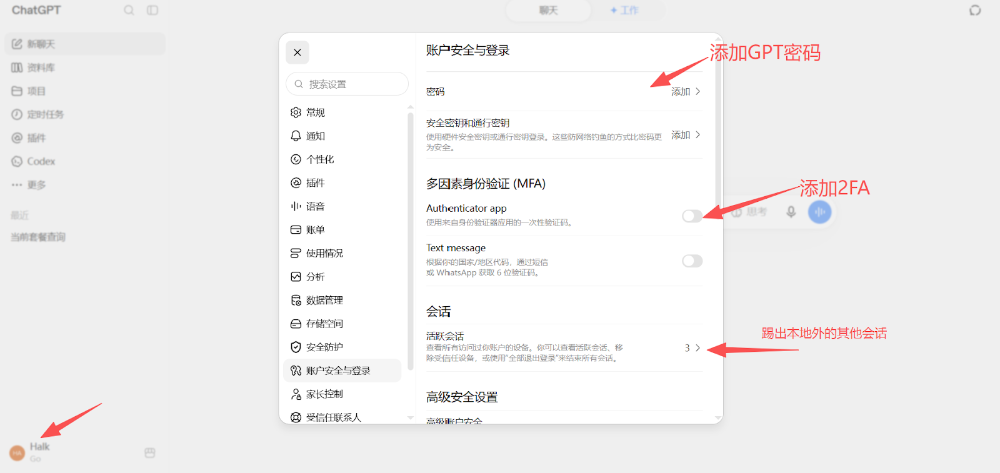
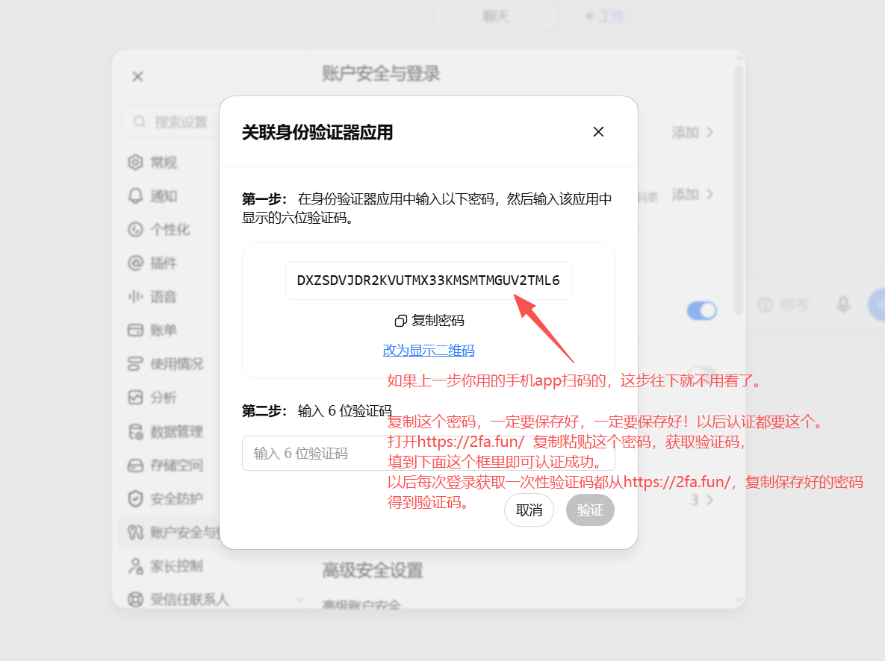
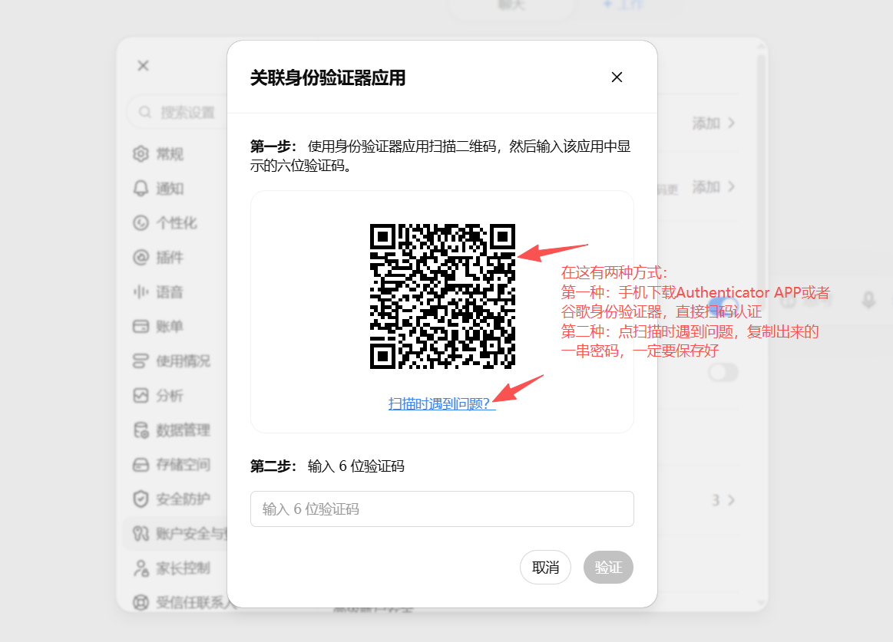
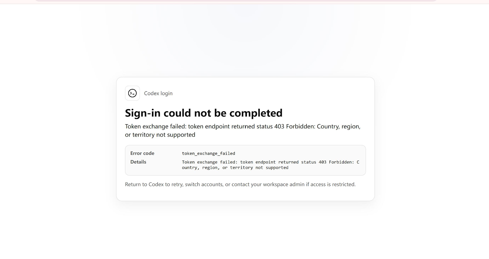
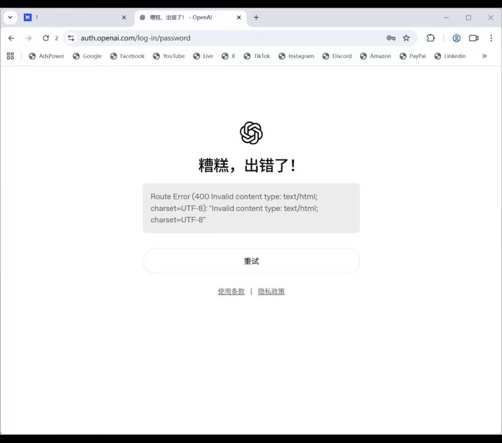
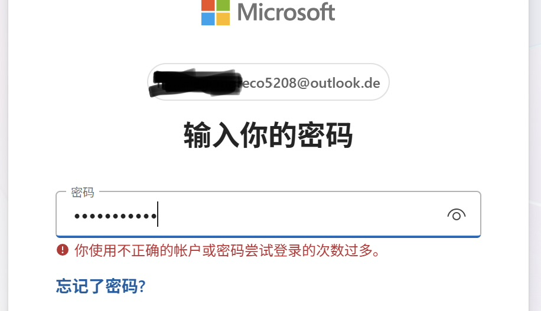

网络准备
科学上网、梯子推荐请私聊沈万三。
新手服务
完全没有能力看教程的小白，可联系管理员获取付费协助。
点击问题可展开答案
01
成品账号使用与售后
质保 30 天成品 PLUS 问题汇总
如何使用质保 30 天成品 PLUS 卡密？
密钥格式：Outlook 邮箱 ＋ Outlook 密码。登录方法见下方视频；如果第一次没看懂，可以暂停并逐步跟着操作。
如何增加 GPT 密码以及 2FA 保护？
依次打开：头像 → 设置 → 账号安全与登录。先添加安全密钥，再开启 2FA（Authenticator App）。一定要保存 2FA 密钥；可在 2fa.fun 获取 2FA 验证码。遇到问题时，可以截图后询问 AI。
重要：2FA 密钥相当于账号安全凭证，请妥善保存，不要公开分享。



是否需要接国外手机验证码？
- 使用网页版不需要接国外手机验证码。
- 使用 Codex 需要接国外手机验证码。
- 请购买约 1 个月的长效手机验证码。
售后客服找谁？
质保 30 天 PLUS 的账号问题找 PLUS 客服 1 号；如果找不到，请联系群管理员。接手机验证码问题，请在群里联系“手机号验证码客服”，不要找错人。
可以用多久？用完之后怎么办？
- 这是成品号，不是充到你自己的账号，可使用 30 天，可能有 0～2 天误差。
- Codex 对话记录保存在电脑本地。账号到期后更换账号，本地对话记录仍然保留。
- GPT 网页版聊天记录可使用 ChatMemo 插件保存。
是否可以退货退款？
非账号问题，无售后；账号问题，有售后。
什么是省心服务？
对于完全没有能力或精力安装、修复 Codex 的小白客户，可支付 20～50 元服务费，由客服全程协助直至成功使用 Codex；不成功不收费。
购买之后找不到卡密怎么办？
进入购买店铺的订单查询，输入购买时填写的联系方式，以及你自己设置的查询密码。
故障排查
以下情况通常不是账号问题
当前节点网络不畅或页面无法连接
需要更换一个畅通的日区或美区节点。IP 要纯净，并尽量保持稳定，不要频繁切换；可以多尝试几次。


之前使用中转站或 CC Switch，现在显示 API 报错／无法连接
原因通常是旧配置文件没有更新。需要找到用户目录中的 .codex 文件夹，删除旧登录凭证与配置，再重新完成登录流程。
- 1按 Win + R 打开“运行”窗口。
- 2粘贴
%USERPROFILE%\.codex，然后按回车。 - 3找到
auth.json（登录凭证）和config.toml（程序配置），删除后重新登录。
登录 Outlook 邮箱多次显示账号或密码错误
登录 Outlook 邮箱时，请先关闭梯子，再重新尝试登录。

02
Free 账号注册与 PLUS 升级
直充／代充 GPT PLUS 常见问题
开始之前
- 需要具备可用的梯子；获取建议可私聊沈万三。
- 需要具备 GPT Free 账号；下方提供 QQ 邮箱注册教程。
- 直充 PLUS 有概率需要国外手机验证码，取决于网络节点是否纯净。